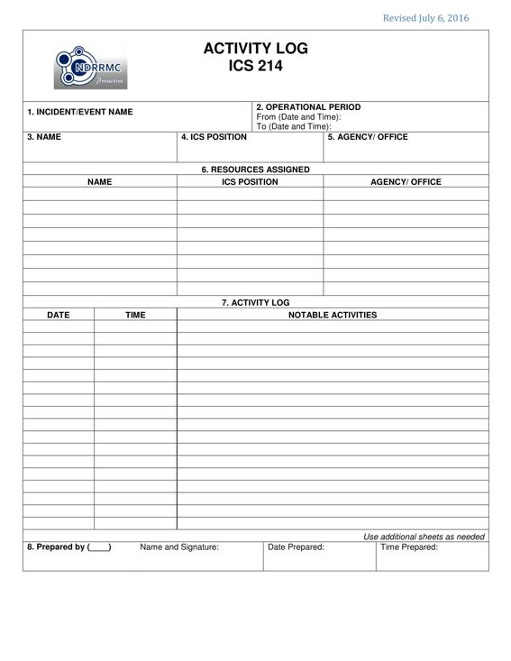

PURPOSE: The ICS 214 records details of notable activities at any ICS level, including single resources, equipment, Task Forces, etc. These logs provide basic incident activity documentation, and a reference for any after-action report.
PREPARATION: The ICS 214 can be initiated and maintained by personnel in various ICS positions as it is needed or appropriate. Personnel should document how relevant incident activities are occurring and progressing, or any notable events or communications.
DISTRIBUTION: Completed ICS 214s are submitted to supervisors, who forward them to the Documentation Unit. All completed original forms must be maintained by the Documentation Unit. It is recommended that individuals retain a copy for their own records.

BLOCK NO. |
BLOCK TITLE |
INSTRUCTIONS |
| 1 | Incident Name | Enter the name assigned to the incident / event. |
| 2 | Operational Period | Enter the start date (mm-dd-yyyy) and time (24 hour format) and end date and time for the operational period to which the form applies. |
| 3 | Name | Enter the name of the personnel in charge of the unit. |
| 4 | ICS Position | Enter the position of the personnel. |
| 5 | Agency/ Office | Enter the agency/ office of the personnel. |
| 6 | Resources Assigned | Enter the summary of information for the resources assigned for the unit. |
| Name | Enter the resource’s name. |
|
| ICS Position | Enter the resource’s ICS position. |
|
| Agency/ Office | Enter the resource’s home agency/ office. |
|
| 7 | Activity Log | Enter the details of the notable activities of the unit. |
| Date | Enter the date (mm-dd-yyyy) the activity was conducted. |
|
| Time | Enter the time (24 hour format) the activity was conducted. |
|
| Notable Activities | Describe the notable activities conducted such as task assignments, task completions, injuries, difficulties encountered, etc. |
|
| 8 | Prepared by (___) | Enter complete name, signature, date (mm-dd-yyyy), and time (24 hour format) the form was prepared and completed. Note: Enter the position in the (_____) |